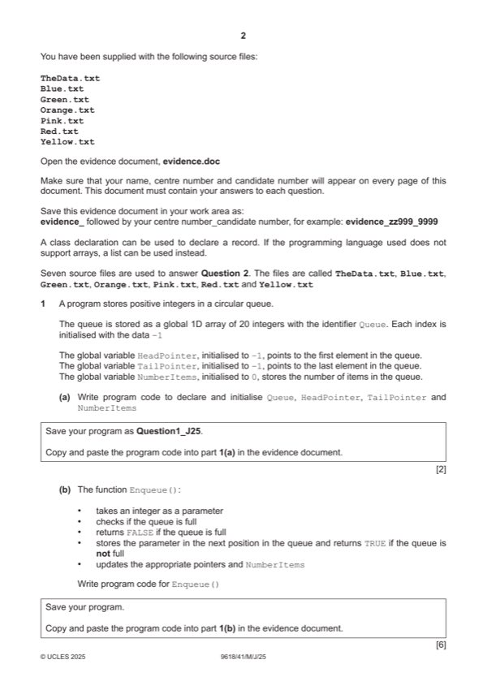

Question 1

Original paper page 2
Part 1(a) — solution
- (global) Declaration of 1D array Queue, 20 elements initialised with –1
- (global) HeadPointer and TailPointer initialised to –1, NumberItems initialised with 0
Visual Basic (VB.NET)
Dim Queue(20) As Integer
Dim HeadPointer As Integer
Dim TailPointer As Integer
Dim NumberItems As Integer
For x = 0 To 19
Queue(x) = -1
Next
HeadPointer = -1
TailPointer = -1
NumberItems = 0
Python
Queue = [-1 for x in range(20)] HeadPointer = -1 TailPointer = -1 NumberItems = 0
Mark points
- (global) Declaration of 1D array Queue, 20 elements initialised with –1
- (global) HeadPointer and TailPointer initialised to –1, NumberItems initialised with 0
Part 1(b) — solution
- Function header (and close) taking 1 (integer) parameter and returning a Boolean value in all cases
- Checking if queue is full (NumberItems = 20) and returning FALSE
- Checking if queue is empty (NumberItems = 0) then and updating TailPointer and HeadPointer appropriately
- Incrementing TailPointer and NumberItems in appropriate place …
- … looping back to 0 for TailPointer if at end of structure
- Storing parameter in Queue[TailPointer] (after increment) and returning TRUE
Visual Basic (VB.NET)
Function Enqueue(InputData)
If NumberItems >= 20 Then
Return False
End If
If TailPointer <= -1 Then
TailPointer = 0
HeadPointer = 0
Queue(TailPointer) = InputData
University Press & Assessment 2025 Page 10 of 43
9618/41 Cambridge International AS & A Level – Mark Scheme May/June 2025
Else
TailPointer = TailPointer + 1
If TailPointer = 20 Then
TailPointer = 0
End If
Queue(TailPointer) = InputData
End If
NumberItems = NumberItems + 1
Return True
End Function
Python
def Enqueue(InputData):
global Queue
global HeadPointer
global TailPointer
global NumberItems
if NumberItems >= 20:
return False
if TailPointer <= -1:
TailPointer = 0
HeadPointer = 0
Queue[TailPointer] = InputData
else:
TailPointer = TailPointer + 1
if TailPointer == 20:
TailPointer = 0
Queue[TailPointer] = InputData
NumberItems +=1
return True
Mark points
- Function header (and close) taking 1 (integer) parameter and returning a Boolean value in all cases
- Checking if queue is full (NumberItems = 20) and returning FALSE
- Checking if queue is empty (NumberItems = 0) then and updating TailPointer and HeadPointer appropriately
- Incrementing TailPointer and NumberItems in appropriate place …
- … looping back to 0 for TailPointer if at end of structure
- Storing parameter in Queue[TailPointer] (after increment) and returning TRUE
Part 1(c) — solution
- Calling Enqueue() with 1 to 25 (inclusive) in order
- … storing/using return value in selection …outputting Successful with integer and outputting Unsuccessful with
Visual Basic (VB.NET)
Dim ReturnValue As Boolean
For x = 1 To 25
ReturnValue = Enqueue(x)
If ReturnValue = True Then
Console.WriteLine(x & "Successful " )
Else
Console.WriteLine(x & "Unsuccessful ")
End If
Next x
Python
for X in range(1, 26):
ReturnValue = Enqueue(X)
if ReturnValue == True:
print(x,"Successful")
else:
print(x,"Unsuccessful")
Mark points
- Calling Enqueue() with 1 to 25 (inclusive) in order
- … storing/using return value in selection …outputting Successful with integer and outputting Unsuccessful with
Part 1(d) — solution
- Dequeue() header (and close) and checking if queue is empty (NumberItems = 0) and returning –1
- Returning data at HeadPointer
- Incrementing HeadPointer …
- … and catching if = 20 to return to 0
- Decrementing NumberItems
- Resetting HeadPointer and TailPointer when queue is empty
Visual Basic (VB.NET)
Function Dequeue()
Dim ReturnValue As Integer
If NumberItems <= 0 Then
Return -1
Else
ReturnValue = Queue(HeadPointer)
HeadPointer = HeadPointer + 1
If HeadPointer >= 20 Then
HeadPointer = 0
End If
NumberItems = NumberItems – 1
If NumberItems = 0 Then
HeadPointer = -1
TailPointer = -1
University Press & Assessment 2025 Page 14 of 43
9618/41 Cambridge International AS & A Level – Mark Scheme May/June 2025
End If
Return ReturnValue
End If
End Function
Python
def Dequeue():
global Queue
global HeadPointer
global TailPointer
global NumberItems
if NumberItems <= 0:
return -1
else:
ReturnValue = Queue[HeadPointer]
HeadPointer +=1
if HeadPointer >= 20:
HeadPointer = 0
NumberItems -=1
if NumberItems == 0:
HeadPointer = -1
TailPointer = -1
return ReturnValue
Mark points
- Dequeue() header (and close) and checking if queue is empty (NumberItems = 0) and returning –1
- Returning data at HeadPointer
- Incrementing HeadPointer …
- … and catching if = 20 to return to 0
- Decrementing NumberItems
- Resetting HeadPointer and TailPointer when queue is empty
Part 1(e)(i) — solution
- Calling Dequeue() twice
- … outputting return value from both calls
Visual Basic (VB.NET)
Dim NextValue As Integer NextValue = Dequeue() Console.WriteLine(NextValue) NextValue = Dequeue() Console.WriteLine(NextValue)
Python
NextValue = Dequeue() print(NextValue) NextValue = Dequeue() print(NextValue)
Mark points
- Calling Dequeue() twice
- … outputting return value from both calls
Part 1(e)(ii) — solution
- 1 to 20 with Successful
Mark points
- 1 to 20 with Successful